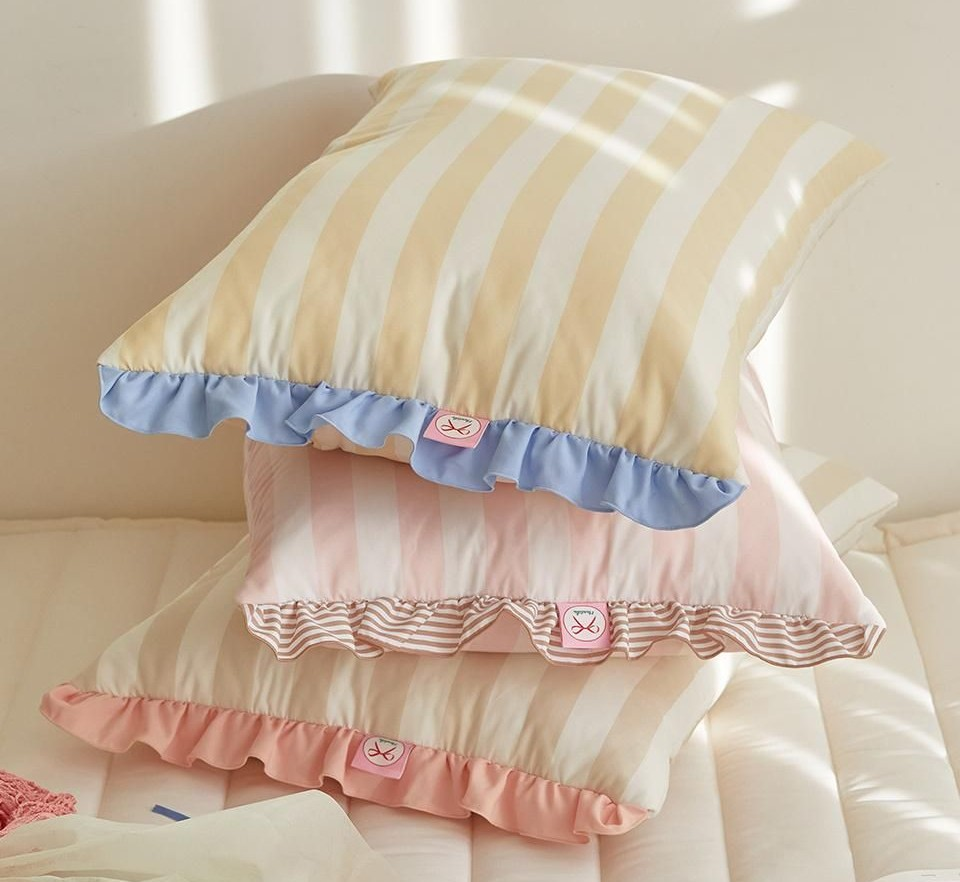
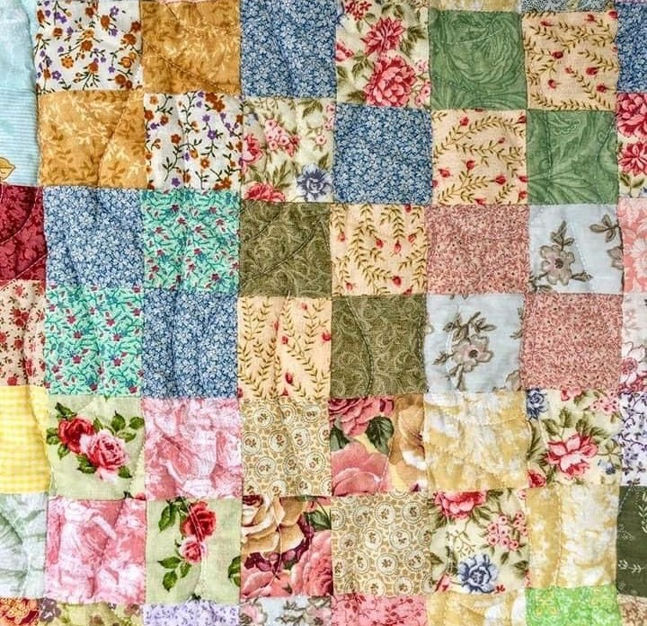
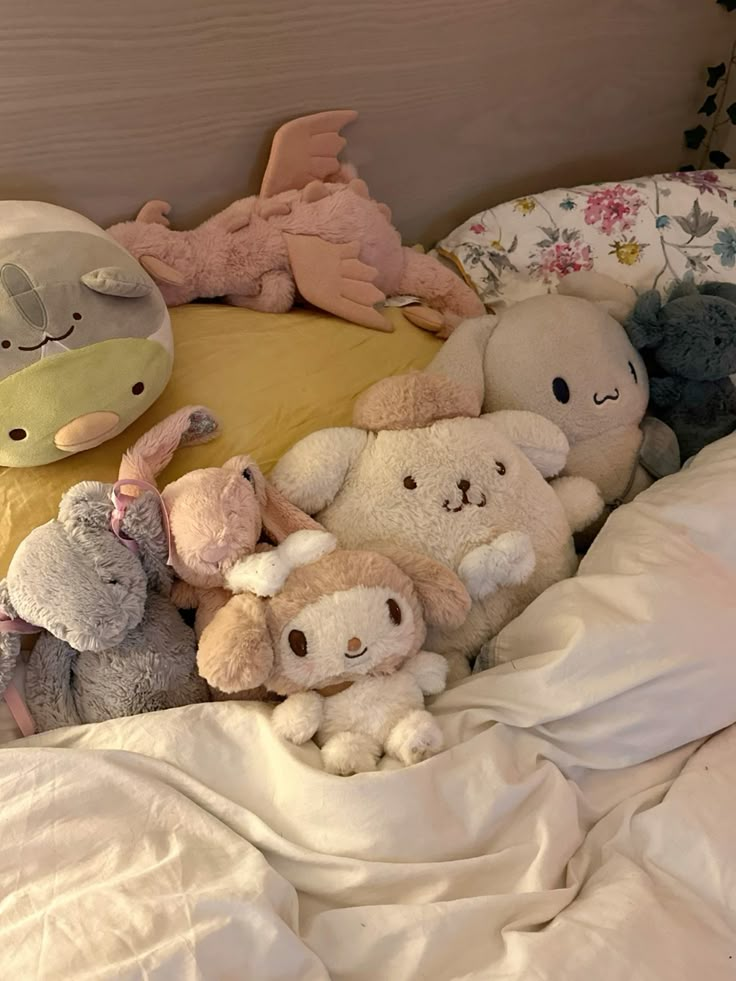

Nesta área você encontra tudo que me rodeia durante minha rotina noturna e na hora de mimir!
Aqui estão alguns dos itens que estão presentes na minha cama. Passe o mouse por cima de cada foto para descobrir um pouco mais sobre o objeto desejado.

Eu tenho costume de dormir com três travesseiros! Geralmente uso dois de penas para recostar a cabeça e um de espuma para abraçar.

Alguns anos atrás minha tia costurou uma colcha de retalhos e me deu de presente. Toda vez que deito para dormir com ela fico feliz.

Gosto de colecionar pelúcias que compro ou ganho de pessoas amadas. Durante o dia elas ficam na minha cama e são tiradas apenas na hora de dormir.